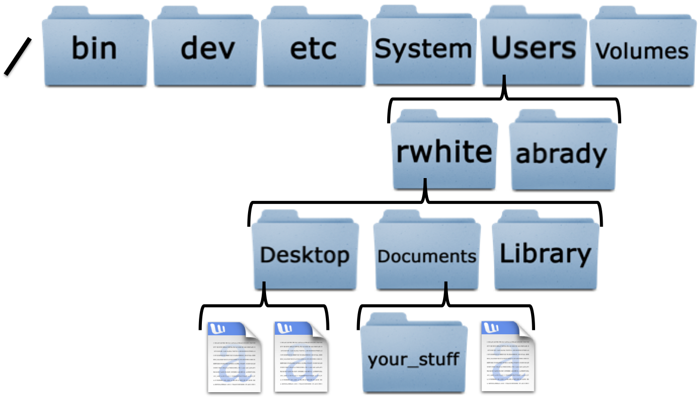
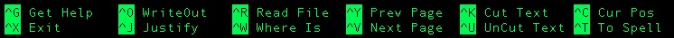
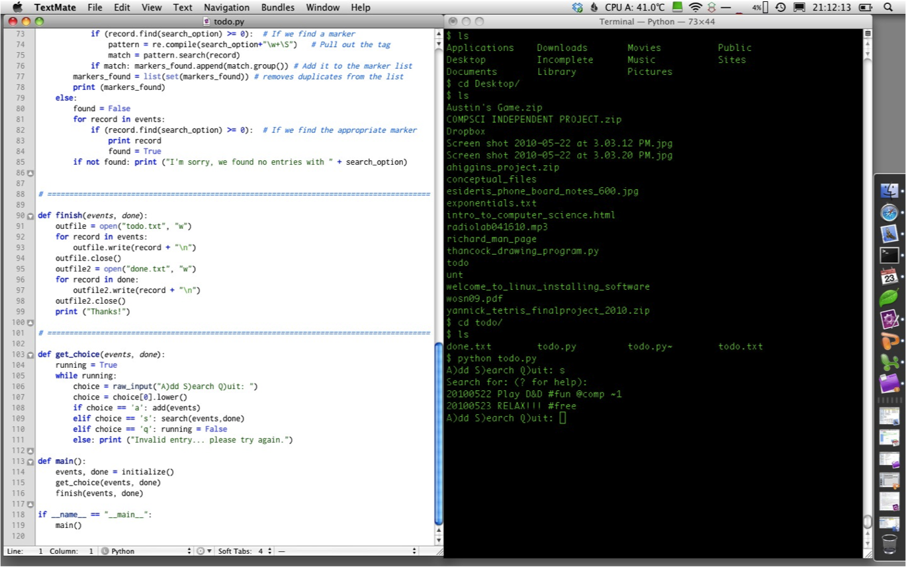
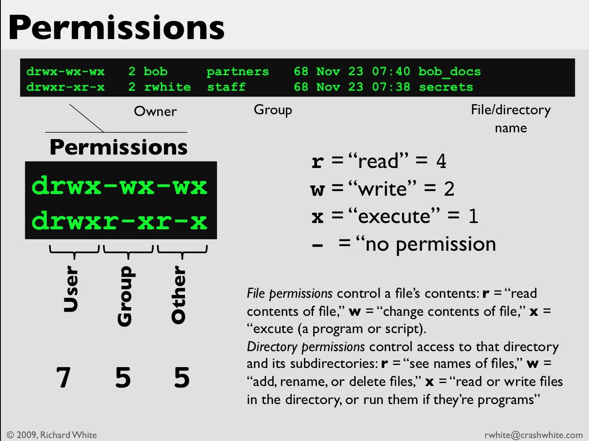
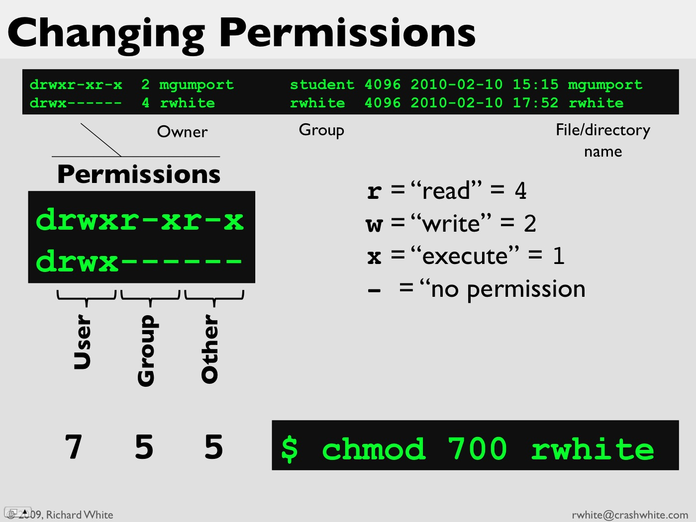
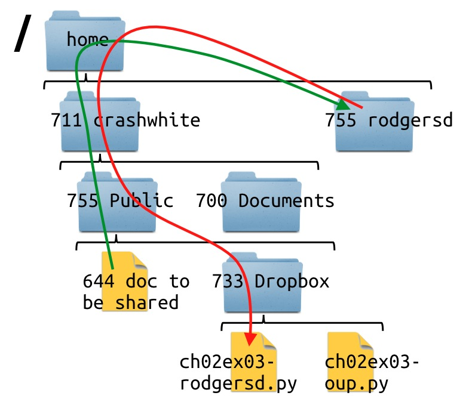

Introduction to Computer Science:
An Intro to Programming
- Unit 1, Day 1 - Introduction to the course
- Unit 1, Day 2 - Introduction to text editing
- Unit 1, Day 2 - Introduction to programming
- Unit 1, Day 3 - Introduction to the server
- Unit 1, Day 4 - Programming Basics
- Unit 1, Day 5 - Numeric Data Types
1. Introduction to the course
1.a. The course
This course is an elective for 11th/12th grade students, and is designed to be an introduction to computer science and software engineering using the Python programming language.
Python can be installed on Apple's OS X, Microsoft's Windows, and Unix/Linux OSes.
This course doesn't cover computing hardware specifically, although computer programs are run on hardware, and may be used to control hardware.
This course does cover programming...
1.b. The textbook
The textbook for the course is:
Zelle, J. 2010. Python Programming: An introduction to computer science, Second Edition.
Please note that this edition of the book uses Python 3, which is not the version of Python we'll be using in this course—we'll be using Python 2.7. The differences between the two versions, for the purposes of this course, are minor.
These differences are ones that you'll quickly learn to manage. The textbook is an excellent resource, and the reading provides lots of background material that we won't have time to cover in class.
1.c. The website...
...is at www.crashwhite.com/introcompsci
It includes:
- overview of course
- course schedule (including assignments
- handouts for assignments, pseudocode, solutions
- course readings
- links to online quizzes
- links to other resources
1.d. The computers
In class and at home, you'll probably be using your own laptop computer for assignments. You'll be responsible for managing your own computer, power supply, software installations, etc.
Strategies for managing your work and files, depending on your situation:
| Who you are: | Mac user, using school's iMac and your own Mac at home | Windows user, using school's iMac and Windows at home | Mac/PC user, bringing your own laptop to school |
| Where do you keep your data? | Keep your files stored on a flash drive, and/or keep them on the class server | Keep your files stored on a flash drive, and/or keep them on the class server | Keep your files stored on your computer, and make regular backups of your hard drive |
| How will you run Python, SSH, SFTP? | Software comes pre-installed on OS X (except PyGame) | Download and install Cygwin, OR, boot Ubuntu (Linux) from a USB Flash Drive on your PC and work there. | PC: Download and install Cygwin. |
| Advantages/Disadvantages | No need to carry a laptop back and forth. You may have to struggle to get PyGame installed on your home computer at some point. | No need to carry a laptop back and forth, but you'll have to run Cygwin at home, or boot from a USB flash drive to run Linux. | You get to work on your own machine and don't have to worry about transferring files. But your whole laptop could get stolen—and you better have backups of all your data in case something happens. |
1.e. Using our machines
Do this:
NOTE: Blue boxes in these Lecture Notes indicate an activity to be performed.
- Log in to your machine
- Make sure you can access the wireless access point using credentials supplied by the instructor
- Launch the Terminal application
Some definitions:
NOTE: Green boxes in these Lecture Notes indicate important definitions or syntax that you'll need to remember.
The Terminal is a "command-line interface" (CLI) text-only application that allows you to access the shell. Your mouse will do you no good here.
The Shell is a program that allows you to give instructions to the operating system.
A graphical user interface (GUI) offers a more visually appealing way of giving a program instructions, and usually involves the use of a mouse.
1.f. Directories
Files are organized into "folders" called directories. On the machine you can be somewhere (your "working directory"), and look other places (using various commands.
The root directory "/" is the largest container in the file system. Everything is else is contained in directories nested in the root directory.
Your "home directory" is contained in /Users/ on the Apple. It's in /home/ on Ubuntu.
1.g. The shell
When you start a Terminal session, you begin in your "home directory," which is typically identified by your userID, often your name.
You use the ls command to "look" at files and directories on your computer, and you use the cd command to "move to" places in your directory structure.
What single command takes you to your home folder?
What single command takes you to the root directory of the computer?
What command would you use to list the contents of the root directory while you're in your home directory?
We'll be using a number of Terminal commands throughout the semester.
- pwd = print working directory: show where you are currently located in the file directory
- ls = list files; also try ls -a, ls -l, and ls -R
- cd = change directory
- [tab] = autocomplete a command
- ctrl-c = halt execution of a program
- exit = log out of a session (leave the Terminal or a program)
1.h. The server
Most people are used to working on a local machine, and you'll certainly be doing that in here. It's often the case, though, that one uses a local machine to access files and services from a distant computer (a server) located somewhere else. There is a server for this class, which you'll be using in lots of ways.
- using ssh to run Python (from a PC, you'll need to login using Cygwin)
- using sftp or scp to submit assignments (PC requires Cygwin)
- hosting webpages
As mention above, PC users will need to install the Cygwin package to be able to access the class's server.
You'll get information from the instructor on how to go about accessing our server. Do not share your login credentials with anyone, and don't do anything silly on our server: storing bad stuff (porn, copyrighted materials, large media files), streaming content, giving access to people not in this course, etc.
1.i. Some warnings
Computers and data are sensitive, and it's easy to destroy them.
Physical Safety of machines:
- Don't move laptops when they're not asleep.
- Keep liquids well away from hardware.
- Keep machines secured when you're not around.
Safety of data:
- Make backups of your data. When you lose data—and you will—you're only recourse is to restore from a recent backup. Make sure you have one.
- Be careful in the Terminal--it is possible to completely destroy your machine with a single wrong command. (Yes, you'll learn how.)
More Warnings!
- Use strong passwords—we'll talk about this.
- Put computers away nicely—be sure to leave time at the end of class for logging out and cleaning up your work area.
- Terms of Service (TOS), Approved Use Policies (AUPs)—You'll be agreeing to these.
- Cheating—What's the difference between Copy/Paste and cheating?
- Just because you can, doesn't mean you should:
- EULA = "End User License Agreement"
- AUP = "Approved Use Policy"
- DMCA = "Digital Millenium Copyright Act"
- DRM = "Digital Rights Management"
1.j. Assignments
There will be a number of different types of assignments in this course. You might like to know at the start what types of assignments there are, and how you might be expected to approach them.
- In class exercises
These will be completed as we develop new material in class. These will be quick examples to help you learn how new commands work, and aren't graded. - Homework Execises
These will allow you to practice your skills with a little less guidance. Some of these will be turned in (via the class server) for evaluation by the instructor and credit. - Online Quizzes
These will be offered every week or two, and usually accompany an online reading assignment outside of class. Not really anything to stress about. - Major Projects
These are longer-term projects that may take anywhere from a few days to a week or more. There will be two "independent" projects included with this, in which you'll have some choice as to what the focus of your project is. You'll receive a separate assignment handout for each of these projects describing the parameters, requirements, etc. These projects are a major factor in your grade, and should be planned for and taken seriously.
1.k. Help?
Computer geeks and programmers, unfortunately, often tend to be loners. That's no fun.
There's definitely something to be said for being a self-starter, and bashing away on the computer late into the evening figuring out how this all works. By trying things a few different ways and seeing what works—and what doesn't—you can learn an enormous amount. This is the preferred way of picking up programming, but it does take a little time.
You can occasionally improve your efficiency (if not your knowledge) by taking advantage of fellow geeks. You should ask other students how they did stuff, or ask the instructor, or Google for assistance when things aren't going the way they should.
2. More shell commands, and an intro to text editing
2.a. More shell commands
- Take a moment to create a new directory in your Documents folder called "notes".
- Use ls to confirm that the folder was created.
- Then make a folder in your Documents directory called "code".
- Use the ls –al command to list out the attributes of these folders. Can you figure out what some of the columns listed mean?
- cd into these folders to see if there is anything in them, then return to the home directory.
You'll find that you'll be creating lots of files in this course, and it will make some sense for you to keep them organized into directory structure that you've created and that makes sense to you.
2.b. Text Editing
A text editor is not a word processor. Text editors work with pure text, and have no ability to "make things look pretty" like a word processor does. There are no superscripts or subscripts, no underlining, no bold, and no italics.
The advantage to a text editor is that it handles unformatted plain text, which is easier for both computers and programmers to work with.
You can choose which text editor you want to work with in here. Some possibilities:
- Windows: Notepad++
- Apple: TextWrangler, nano (run in Terminal), or TextEdit (Preferences: "Plain text")
- Linux/UNIX, etc: nano, vim, emacs, gedit, pico
At this stage of the game, for this class you are strongly encouraged to use nano, for a number of reasons: it's free, it's widely available, it's the easiest of the Terminal-based text editors to learn, and it's what you'll be using when you log in to our server. The more practice you have with nano, the easier it's going to be for you to program.
- Start nano in the Terminal:
$ nano
- Note that you can't use the mouse! Commands are listed on bottom two lines of the window:
 - Take a moment to use nano to create a text file called todo.txt, which includes a short list of things you need to do. Save this folder into your notes directory. (How are you planning on doing that?)
3. Introduction to programming
3.a. Levels of languages
Instructions given to a computer can be coded at a number of different levels, including:
- Machine language
- Assembly
- High-level
The following is a high-level (Python) program:
Note how this program is made up of words and well-known symbols that include English words as part of the code.
This high-level program has to be converted to something to a code—ultimately a code that just uses 1s and 0s—that the computer can run. Here is the lower-level hexadecimal code for the same program:
Additionally, programs may either be compiled, or interpreted. For a compiled program, the "source code" is given to the computer in advance so that instructions can be converted into a machine language program that will be run directly. An interpreted program is taken by an interpreter that runs the program for you indirectly on the computer.
Python runs via an interpreter, which makes it extraordinarily easy to use. Java, used in the AP Computer Science course, is a compiled language: each time you make a change to a program, you have to first recompile the program, and then run the compiled versions of the program.
3.b. Python
We're going to be using the Python programming language in this course, and there are three ways that you can write and execute Python instructions:
- Running Python and executing instructions interactively through the interpreter—this is handy for learning, but not very good for real programming.
- Running an Integrated Development Environment (IDE)—IDEs have lots of tools that can come in handy for very large programs, but are probably not as useful for what we'll be doing.
- Writing programs using a text editor, then using Python to compile and execute those programs—this is what we'll be doing most of the time!
Let's try running Python interactively first.
3.b.i. Using the Python interpreter
To start the Python interpreter, type python at the command line and hit the [Enter] key:
The >>> prompt let's you know that Python is waiting for you to enter an instruction.
Try this and see what happens:
Then try a few other statements in the interpreter to see what happens:
- print Hello, world!
- print 3+4
- print “3+4”
- print 3,4
- print 34
- print 3 4
Once you're done with your interactive session, exit by typing "exit()", or holding down the ctrl key while pressing d.
Executing instructions like this one at a time in the interpreter is kind of cool, especially when you're trying to figure out a command that's new to you, or if you want to experiment real quickly with an idea.
There's one big disadvantage, though: if you want to execute your instructions again, you have to type them in again. Usually, it's much better to write a program.
3.b.ii. Using Python to compile and run a program
Before Python can compile and run the program, you have to write the program first, for which you need a text editor.
Do this:
- In the Terminal, create a directory called "unit1" in your "code" folder. Then cd into this folder.
- Use nano or another text editor to create the program helloworld-whiter.py.
- This program should print out the message "Hello, world!" when it runs, along with the sum of the numbers 1-10 and a personalized goodbye message to you. Once you think you've written the program, save it in your "code/unit1" folder, exit nano, and try running your program:
$ python helloworld-whiter.py
If your program runs perfectly the first time, congratulations! You got really, really lucky. And if your program didn't work as you expected it might—either because you mis-typed something, or because you're still trying to figure out how all of this works, well... welcome to the world of programming. We're going to be writing programs in here, but we're going to spend even more time trying to get the programs to work the way we want them to.
It's kind of like solving a puzzle... and it's a fantastic feeling when you solve the puzzle and get your program to work!
3.b.iii. Some logistical details
You can see that we've introduced the file-naming convention that we'll be using throughout the course. It's important that each file you work on be identified, by assignment and by author. It's the equivalent of putting your name on your paper.
File Naming Convention in this course:
assignmentName-lastnameFirstinitial.py
The assignment name will be given in class for each assignment. For exercises from the book, use this convention:
ch02ex17-whiter.py, where 02 is a two-digit code for the chapter, and 17 is the exercise number.
Don't use spaces in your filenames.
Most computer systems use a space (" ") to separate instructions, or parameters, or items in a list. Although modern operating systems allow for a space in a filename (my program.py, for example), it's not a good idea. When referring to such a program, you'll either have to "escape" the space by putting a backslash in front of it ( python my\ program.py) or putting quotes around the filename (python "my program.py"), both of which require extra typing and effort on your part.
There are two strategies for indicating "words" in a filename: use underscores or use capital letters. my program.py should be written as my_program.py or myProgram.py.
You'll also typically want to have two windows open simultaneously on your screen: one for the code that you're writing, and one for running that code. You'll switch back and forth between the two windows as you work, writing code in the window on the left, and then running the code in the window on the right to see how your program is coming along.
If you really get into coding, you may even move into using two monitors at some point.
3.b.iv. Comments
Real programs have additional components, some of which we're going to introduce right away.
Using nano again, edit your program to include comments: text that is not used by Python, but that is used by programmers to identify and understand the code. Python ignores everything to the right of a #, so we use that to indicate a comment.
Save your program and run it again to make sure that it works just as it did before.
3.b.v. Suites
Programs include logical sections of code blocks, which in Python are called suites.
A suite in Python is a logical block of code, identified at the beginning by a colon (:), with all lines indented exactly 4 spaces from the previous line.
NOTE: Do not use [tab]s to create your spacing unless you have configured your text editor to replace tabs with spaces. Four spaces may look the same as a [tab], but Python won't be able to run your program correctly. Also, although the "4 spaces" rule is not required by Python—you can actually use any spaced-indent for a suite, as long as the same indent is used consistently throughout the program—in here we'll be using 4-spaces, which is standard Python "best practice."
You could reasonably wonder why we should include in our program 3 blank lines, and 5 lines of comments that don’t make the program run any differently.
Experienced coders already know the answers to these questions, but you may not get it for awhile. Briefly:
- The blank lines make the program easier to read, for you and anyone else who’s looking at your work.
- The comments identify important parts of the program, useful to you and anyone else who’s looking at your work.
Now modify your program to include a main function, as follows:
Here, the def instruction in Python defines a function called "main", which contains a bit of code that won't be run until the name is used later on in the program.
Down below, then, we "call the function" by writing "main()", which tells the interpreter to execute the instructions that we'd described earlier on in the function definition.
Again, you might wonder why we've made our straightforward program a little more complex by defining a function.
- The function definitions provide a modularity to your program that will be extremely important to us in the near future. We want to get comfortable as quickly as possible with the idea of modular programs.
From here on our, you'll always be writing your programs with at least one function—main()—and then calling that function to execute it.
3.c. Loops
If someone were to ask you to write a program that called helloworldmultiples-whiter.py to print "Hello, world!" five times, you might write something like this:
That might work here, but you wouldn't want to follow that strategy if you had to write "Hello, world!" a hundred times.
In Python, there are two main types of loop structures: for loops and while loops.
Did it work? If not, you'll have to debug the program to get it running.
Note that the body of the loop—the part that's going to be repeated over and over—gets indented 4 spaces as a code block. Any statement that is indented, and thus in the code block, will be repeated as part of the loop. When you don't want the next statement to be part of the body of the loop, you stop indenting. That next statement, then, is where execution of the program will begin after the loop has finished running.
What do you think the variable i was doing while the program ran through this loop?
Modify the program so the body of the loop has two print statements: one that prints the value of i, and one that prints out "Hello, world!"
In this program there were two code "blocks": the main function indented 4 spaces, and the "body" of the for loop which is indented 8 spaces.
This program uses a variable i to store a value that changes as the program runs. First the value 0 is stored in i during the first iteration of the loop, and the code block beneath is executed with the value 0 used anytime i is mentioned.
At the end of the code block, execution returns to the top of the code block, but now with i having a value of 1. The variable i gets successive values stored in it as the loop repeats over and over, 10 times, with i running from 0 to 9. After that, the loop stops, and execution continues on to the next line below the loop.
3.d. Inputting numbers and assigning values to variables
Being able to write a program to do something a fixed number of times is nice, but we don't want to have to rewrite the program every time the number changes. What if we wanted to have “Hello, world!” print a different number of times, depending on what the user wants?
Enter this code and run the program.
You saw before how the variable i was assigned successive values in a for loop. Here are a couple of other ways that you can assign a value to a variable.
To assign a value to a variable in a program:
<variable> = <expression>
Examples:
height_in_feet = 5.8
height_in_inches = 12 * height_in_feet
height_in_inches = height_in_inches + 0.5
Also,
To allow a user to enter a value while the program is running:
<variable> = input(<prompt>) # for entering numbers, or
<variable> = raw_input(<prompt>) # for entering "strings"
Examples:
age = input("Enter your age")
user_name = raw_input("Enter your name")
4. Introduction to the server
4.a. What is a server? Where is our server?
When a computer is connected to a network, an Internet Protocol (IP) address or a hostname is required to interact with that computer.
Your own machine, the one that you're working on right now, has the IP address 127.0.0.1, and a hostname of localhost.
A remote networked computer called a server may—with proper authentication—allow for users to log in, whether they're on another computer in the same room or one halfway across the world. This class's server is headless, and tucked away in some corner of campus. The only way you can access that machine is via the command line.
Our server is located at IP **.**.***.*** and has a hostname **********.***********.org
4.b. What can you do?
You'll be interacting with this course's server in a number of different ways, depending on your needs. You might:
- Log in using ssh (the Secure SHell) in order to use the computer to run Python, edit programs, write web pages, etc.
- Submit a copy of an assignment using scp (Secure CoPy)
- Log in using sftp in order to upload assignments or other files to the server.
- View webpages that you've written that are being served by the server.
Let's take a look at using SSH first.
4.b.i. Logging in to the server.
To log in to the server, you'll need a userID and password that will be distributed to you in class. You will receive stern warnings from the instructor at this point about strong passwords and sharing your login credentials with others.
When you've received your login credentials:
The Secure Shell (SSH) allows one to securely log in to and use a remote computer's shell.
Log in to the course's remote server by using SSH as follows:
As soon as you have logged in, change your password! Come up with a strong, unique password—again, you'll get more advice from the instructor on this—and then change your password by issuing the following command, and following the instructions:
Once you've changed your password, you can log off using the exit command:
4.b.ii. Looking around the server
Once you’re on the server, you can do most of the things that you can do on your own machine:
- ls - list the files in the current directory
- cd <location> - change directory to a new location
- cp <oldFile> <newFile> - create a new copy of a file
- mv <fileName> <newLocation>
- mkdir <directoryName> - create a new directory at the current location
- rm <fileName> - remove a file
- pwd - print current directory location
Take a moment to cd around the directory structure, and use ls or ls -al to see what files are there. Remember that you can use the following symbols to help you navigate the file structure:
- ./ - current directory
- ../ - directory level above the current one
- ~/ - your home directory
- / - the root directory
Use the mkdir command to create a directory called gradedAssignments in your home directory. This is where the instructor will place work that you've submitted after it has been graded.
4.b.iii. Run Python on the server
If you don't have Python installed on your local machine and don't want to have to mess around with that, you can log in to the server and run it there.
On the server you can write and edit programs in almost the same way that you do on your local computer. You can write programs using nano, you can save them in your home directory on the server, and you can run those programs using Python.
4.b.iv. Understanding permissions
Permissions are a little tricky to understand at first, but we should be able to figure it out without too much difficulty.
Take a look at the following output:
The ls -al command tells the the shell to list all the files in the current directory (including hidden ones) in long format, so that we can see directory permissions, which are listed in the left column of the list.
Let's take a moment focus on those directory permissions listed over on the left.
After the d which indicates that we're looking at a directory (containing files), there is a series of 9 characters, organized in groups of 3, and consisting of the letters r, w, x, or a dash ('-').
- r = "read" access
- w = "write" access
- x = "execute" access
- - = no access
- First 3 characters: the user's (owner's) permissions for this file/directory
- Second 3 characters: the group's permissions for this file/directory
- Third 3 characters: the world's permissions
What does all this mean? In the example above, you can see that I (whiter) am the owner of the directory whiter, and I have rwx permission on this directory. For a directory, the r means that I can see the names of files in the directory, the w means that I can add, rename, or delete files, and the x means that I can read or write files in the directory, and execute files as programs.
The fact that the next three columns have "-" in them means that other people in my group do not have access, and the three columns of "-" after that mean that the world at large doesn't have access to the directory.
If you want to change permissions for a folder or a file, you use the chmod command.
There won't be much occasion for you to have to worry about permissions in this class, although you might be interested to know that permissions are critical for an instructor who wants to set up a Dropbox where you can submit assignments.
4.b.vi. Submitting assignments
In addition to being able to work on the server, you'll be submitting your programming assignments to a Public folder on the server. For this you'll be using the scp command.
scp <source> <destination>
To securely copy a file from my local computer to my Documents directory on the server, I'd use this:
To securely copy a file from your local computer to the instructor's Dropbox on the server—which is what you'll do to submit assignments—you'll use this:
scp is what you use to securely transfer files from one computer to another over the internet. If you're already logged on to the server and you want to copy something from your own home folder to the instructor's folder, you don't need to use the scp command. You can just cp your file into the appropriate folder.
And speaking of submitting assignments, you'll need to make sure that your assignments are "turned in" (uploaded to the server) on time. Points will be assigned according to a rubric that will vary with the assignment, but a typical breakdown of points is along these lines:
- 10% no compilation errors
- 10% no runtime errors
- 20% comments as required
- 20% delivered on time
- 40% runs as specified
5. Programming Basics
5.a. Software Development
Writing good software is challenging, but fun!
The process of writing a program involves quite a bit more than simply sitting down at the computer and entering code. A typical problem will require that you:
- Analyze the problem
- Determine the specifications
- Design the program's overall structure
- Write the program (lots of testing and debugging here)
- Deliver the program
- Maintain the program (updating it as required, repairing it as needed)
In this course, you'll often be provided with the first 2 items, and #6 won't typically be something you'll have to worry about.
5.b. Flowcharts
Flowcharts are a classic tool for analyzing the flow of instructions—especially loops and branches in an algorithm (steps to solve a problem).
We'll be using flowcharts as a tool for discussing problems and developing solutions, especially as assignments get more sophisticated.

5.c. Pseudocode
Pseudocode is a “faux-language” that we can use to begin thinking about how we’re going to write a program. It allows us to think about input, output, branching and looping control structures without having to worry about the actual syntax of Python.
Think of pseudocode as a hybrid language, halfway between English and actual code. It won't actually run on the computer, of course, but it's an important stepping stone to getting the program designed.
For solutions provided by the instructor in this course, you'll often find a pseudocode version of the final program before the actual program. If you find you are having difficulty trying to figure out how to write a program, it may help to look at the pseudocode first, and then trying to write the program again on your own, without yet resorting to the actual solution.
5.d. Identifiers vs. Reserved Words
Identifiers are used to name programs, functions, modules, variables.
Python identifiers:
- must begin with a letter or underscore “_”
- must include only letters, digits, or underscores
- are case-sensitive
- can’t be a reserved word
An important part of producing good, human-readable code is using identifiers that are "self-documenting": a variable used to refer to the user's name should be called userName or user_name, and not just n. It will take a fraction of a second longer to type the complete name when you're writing the code, but you'll save minutes or even hours later on when you're debugging the code.
Reserved words in a programming language are those words that have special significance, and can't be used for other purposes by a programmer.
The reserved words in Python include:
and, assert, break, class, continue, def, del, elif, else, except, exec, finally, for, from, global, if, import, in, is, lambda, not, or, pass, print, raise, return, try, while, yield
5.e. Code Review
You can quickly improve both your coding and your debugging skills by examining programs that other people have written.
Be sure you take a few moments to go over other people's programs, see what techniques they've used that you hadn't though of, or see how their programs might be improved.
You'll quickly come to realize how important good comments are in a program, as well as using self-commenting variables that help one to understand how a program works.
5.f. More FOR loops
We've already looked at for loops a little. Let's see some more examples:
Try each of the following for statements in the Python interpreter, and notice the differences in output:
The for loop has the following syntax:
<sequence> may be:
- an actual sequence of values, like [1,3,5,7,9]
- something like range(10), which begins at 0 and goes up to one less than 10
- something like range (1,10), which starts at 1 and goes until the number before 10
- something like range(1,10,2), which begins at 1 and goes up by 2 until just before 10
- some other sequence of values, like ['alice','bob','charlie','dave']
Come up with four different ways to print the numbers 1-10 on the screen.
Predict what you think will be outputted by each of these loops. Then enter them into a program or the Python interpreter, and see what happens.
The for loop is an example of a definite loop: the program knows in advance how many times it expects to be repeating the body of the loop.
But what if you don't know how many times you're going to be repeating the loop?
5.g. while loops
Although we haven't yet introduced the "conditional loop", take a look at the program below and see if you can figure out what it does.
We'll be formally learning about the while loop during our next unit.
Let's take a moment, though, to talk about that "=" sign up there. In math we use that sign to indicate that two values are equivalent, but that's not really what that sign means in programming. When we say "i = 1", what we're really saying is "the variable i gets the value 1." You should practice saying "gets" (instead of 'equals') when you're talking about a statement to help you remember this fact.
6. Numeric Data Types
Programming languages represent different types of data differently, and it's important for you to be aware of what data type one is working with. Data types in Python include int (integers), float numbers (floating point, or decimals), str (strings, of text), list (for lists of things), tuple (kind of like lists, but immutable), dictionary...
To begin, let's look at several of the numeric data types, operations that can be performed on those numbers, and some of the ways we can work with those numbers using functions in the math module.
6.a. Integers and Floating Point numbers
Integers have 32 bits of precision. If you need more than that, you'll need to use the longint data type, which has unlimited precision. Longint values are indicated with an "L" at the end of the number, i.e. 3L.
Floats are floating point numbers, i.e. numerical values that do have a decimal point.
Why distinguish between the two? It's all about speed. It's far easier for computers to deal with integers, and therefore far faster for them to perform operations with integers. Differences in speed won't be apparent in most programs that we write, but for any program that performs the same operation thousands, million, or billions of times, working with integers where possible produces a significant increase in speed.
Of course, if you need to work with decimals (floats), then you'll have to use them where appropriate.
Start up the Python interpreter and try out each of the examples here. Can you predict what the output of each will be?
Note that the "/" operator, when used with integers, produces a whole number result, with the remainder of the division process discarded.
The "%" operator gives you that remainder.
Division in Python 2 vs. Python 3
Note the peculiar behavior of the "/" operator in the example above? That's only in Python 2.x, which is what we're using for this course. That behavior has been changed in Python 3, so that the "/" operator acts as you'd probably expect: print 5/2 yields a result of 2.5.
If you'd like to include this behavior from Python 3 in your Python 2 programs, just include this statement near the beginning of your Python 2 program:
Any "/" operators in your Python 2.x program will now act as they do in Python 3.
You can use Python's built-in functions to convert from one data type to another:
6.b. The math module
A module (sometimes called a library) is a program that contains a useful set of related functions.
To use a module in a program, use import modulename near the beginning of your program.
Let's see how to use the math module to perform calculations. Enter the following code in the Python interpreter.
Other functions contained in the math module include:
- e, log(x), exp(x)
- sin(x), cos(x), tan(x), asin(x), acos(x), atan(x)
- radians(x), degrees(x)
Python's trig functions require that the value given be in radians. So, to calculate the horizontal component of velocity for a jet traveling 200 meters/second at 30 degrees above the horizontal:
Note that if you forget to import the math module, you'll get an error.
For a more complete list of methods available in the math module, use help(math) after importing the module.
6.c. Different ways to import a module
Modules obviously provide a convenient way of expanding Python's capabilities beyond the built-in functions that are available any time Python executes a program.
We've already seen the traditional way of importing a module. Note that we have to indicate the module name (math) before we indicate the method we want to used from that module (.pi).
This technique, at the start, is the recommended way to use a method from an imported module.
Another option, though, if you really only need the pi function, is this:
The advantage here is that you can just use the identifier pi all by itself, without having to also specify the module name. The disadvantage is that there is some potential for confusion between the pi that you've imported and any other pi variable that you might be using in your program. The likelihood of this happening in a small program is pretty low, but as your programs become more complex, clearly distinguishing between your local variables and those imported from modules will be important.
The previous example gets only the pi function. If you wanted to get all the functions from math, you would do this:
Now try print sin(math.pi/2), which should give you a value of 1. Did you get the answer you expect?
Now try print sin(math.pi), which should give you a value of 0. Did you get the answer you expected?
What happened?
Let's try something easier. print 0.1 + 0.2
What???!
6.d. Improving nano
Like a lot of things in life, a few minor tweaks here and there can pay off in big gains. How can you make nano a better editor?
It might be helpful if you could have Python identifiers indicated in a different color. It would be great if you could use the [Tab] key to space over 4 characters as required, rather than 8. It would be great if they were actually spaces, rather than the Tab character, which will mess up Python's ability to read the code.
A "resource file" that allows you to customize nano is what you need. One is available in the instructor's Public folder on the school server, and you can:
- Use the cp command to copy it from the instructor's Public folder into your own home directory on the server, like this.
$ cp /home/whiter/Public/.nanorc ~Note that the file is "hidden" from normal directory listings—that's what the dot in front of the "nanorc" name indicates. It will show up in your listings, however, if you give the command ls -a.
-
You can also copy it onto a directory on your computer at home with a similar command, using scp:
$ scp userid@crashwhite.polytechnic.org:/home/whiter/Public/.nanorc ~This securely copies the file from the source (the instructor's Public directory, accessed via userid's login) to the home directory on your local computer (that's the "~"). Launch nano, write a Python program, and see the color formatting appears in your Terminal!
6.e. A factorial function
Even if a built-in function is not available to you, you can easily create your own.
Write a program called fact.py that calculates the factorial of a number entered by the user.
Specifications:
- Ask the user for a number they want to be "factorialized."
- Calculate the factorial and print out the result